import os
import sys
sys.path.insert(0,os.path.abspath('../src/'))
%load_ext autoreload
%autoreload 2
%matplotlib inline
import numpy as np
import xarray as xr
import matplotlib.pyplot as plt
from topo_edit_util import map_mask, mom6_latlon2ij
path_old = '/glade/scratch/gmarques/archive/b.cesm3_cam058_mom_e.B1850WscMOM.ne30_L58_t061.camdev_cice5.026g/ocn/hist/'
file_old = 'b.cesm3_cam058_mom_e.B1850WscMOM.ne30_L58_t061.camdev_cice5.026g.mom6.static.nc'
df_old = xr.open_dataset(path_old+file_old)
df_old = df_old.rename({'xh':'lonh','yh':'lath','xq':'lonq','yq':'latq'})
df_old
<xarray.Dataset>
Dimensions: (lonh: 540, lath: 458, time: 1, lonq: 540, latq: 458)
Coordinates:
* lonh (lonh) float64 -286.7 -286.0 -285.3 -284.7 ... 71.33 72.0 72.67
* lath (lath) float64 -79.2 -79.08 -78.95 -78.82 ... 87.64 87.71 87.74
* time (time) object 0001-01-01 00:00:00
* lonq (lonq) float64 -286.3 -285.7 -285.0 -284.3 ... 71.67 72.33 73.0
* latq (latq) float64 -79.14 -79.01 -78.89 ... 87.68 87.73 87.74
Data variables: (12/15)
geolon (lath, lonh) float32 ...
geolat (lath, lonh) float32 ...
geolon_c (latq, lonq) float32 ...
geolat_c (latq, lonq) float32 ...
geolon_u (lath, lonq) float32 ...
geolat_u (lath, lonq) float32 ...
... ...
depth_ocean (lath, lonh) float32 ...
wet (lath, lonh) float32 ...
wet_c (latq, lonq) float32 ...
wet_u (lath, lonq) float32 ...
wet_v (latq, lonh) float32 ...
Coriolis (latq, lonq) float32 ...
Attributes:
filename: b.cesm3_cam058_mom_e.B1850WscMOM.ne30_L58_t061.camdev_cice5.0...
title: MOM6 diagnostic fields table for CESM case: b.cesm3_cam058_mo...
grid_type: regular
grid_tile: N/Apath_new = '/glade/scratch/bryan/tx2_3v2/'
file_new = 'topo.sub150.tx2_3v2.srtm.edit4.SmL1.0_C1.0.nc'
df_new = xr.open_dataset(path_new+file_new)
df_new_sub = xr.Dataset()
df_new_sub['mask'] = df_new['mask'][-458:,:]
df_new_sub['depth'] = df_new['D_interp'][-458:,:]
df_new_sub['geolat'] = df_new['geolat'][-458:,:]
df_new_sub['geolon'] = df_new['geolon'][-458:,:]
df_new_sub['geolatb'] = df_new['geolatb'][-458:,:]
df_new_sub['geolonb'] = df_new['geolonb'][-458:,:]
df_new_sub['lonh'] = df_old['lonh']
df_new_sub['lath'] = df_old['lath']
df_new_sub
<xarray.Dataset>
Dimensions: (lonh: 540, lath: 458, lonq: 541, latq: 458)
Coordinates:
* lonh (lonh) float64 -286.7 -286.0 -285.3 -284.7 ... 71.33 72.0 72.67
* lath (lath) float64 -79.2 -79.08 -78.95 -78.82 ... 87.64 87.71 87.74
* lonq (lonq) float64 -287.0 -286.3 -285.7 -285.0 ... 71.67 72.33 73.0
* latq (latq) float64 -79.05 -78.92 -78.79 -78.66 ... 89.46 89.72 89.91
Data variables:
mask (lath, lonh) int32 ...
depth (lath, lonh) float32 ...
geolat (lath, lonh) float64 ...
geolon (lath, lonh) float64 ...
geolatb (latq, lonq) float64 ...
geolonb (latq, lonq) float64 ...nlath = df_new_sub.sizes['lath']
nlonh = df_new_sub.sizes['lonh']
print(np.abs(df_old['geolat']).min().values)
print(np.abs(df_new['geolat']).min().values)
0.062499966472387314
0.0
latdiff = df_new_sub['geolat'] - df_old['geolat']
latdiff.plot(vmin=0,vmax=0.5)
<matplotlib.collections.QuadMesh at 0x14596c57a020>
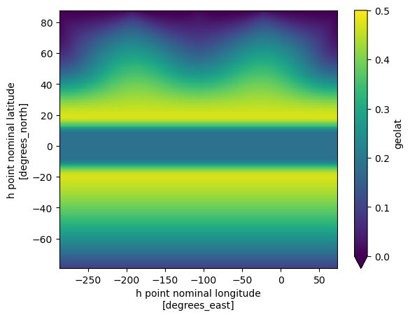
latdiff[:,0].plot()
[<matplotlib.lines.Line2D at 0x14596b4a4910>]
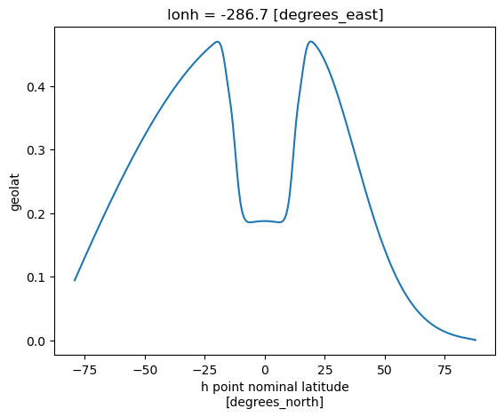
maskdiff = df_new_sub['mask'] - df_old['wet']
df_new_sub['maskdiff']=maskdiff
zdiff = df_new_sub['depth'] - df_old['depth_ocean']
df_new_sub['zdiff']=zdiff
zdiff.plot(vmin=-500,vmax=500)
<matplotlib.collections.QuadMesh at 0x14596ad0e8c0>
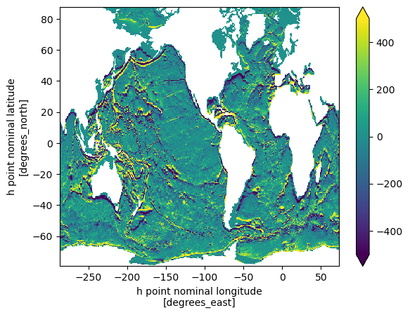
zdiff
<xarray.DataArray (lath: 458, lonh: 540)>
array([[nan, nan, nan, ..., nan, nan, nan],
[nan, nan, nan, ..., nan, nan, nan],
[nan, nan, nan, ..., nan, nan, nan],
...,
[nan, nan, nan, ..., nan, nan, nan],
[nan, nan, nan, ..., nan, nan, nan],
[nan, nan, nan, ..., nan, nan, nan]], dtype=float32)
Coordinates:
* lonh (lonh) float64 -286.7 -286.0 -285.3 -284.7 ... 71.33 72.0 72.67
* lath (lath) float64 -79.2 -79.08 -78.95 -78.82 ... 87.64 87.71 87.74fig,ax=plt.subplots(nrows=2,sharex=True,figsize=(8,4))
ax[0].plot(df_old['geolat'].isel(lonh=-160),
df_old['depth_ocean'].isel(lonh=-160),label='tx0.66v1')
ax[0].plot(df_new_sub['geolat'].isel(lonh=-160),
df_new_sub['depth'].isel(lonh=-160),label='tx2_3v2')
ax[0].invert_yaxis()
ax[0].legend()
ax[0].set_xlim(-80,80)
ax[1].plot(df_new_sub['geolat'].isel(lonh=-160),
df_new_sub['zdiff'].isel(lonh=-160))
[<matplotlib.lines.Line2D at 0x14596ac5a050>]
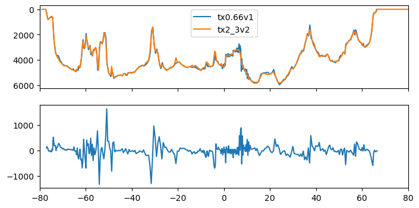
lonbeg=-162
lonend=-154
latbeg=18
latend=24
map_mask(df_old,'wet',lonbeg,lonend,latbeg,latend,
vlon='geolon',vlat='geolat',vlone='geolon_c',vlate='geolat_c')
/glade/u/apps/opt/conda/envs/npl-2023b/lib/python3.10/site-packages/cartopy/mpl/style.py:76: UserWarning: facecolor will have no effect as it has been defined as "never".
warnings.warn('facecolor will have no effect as it has been '
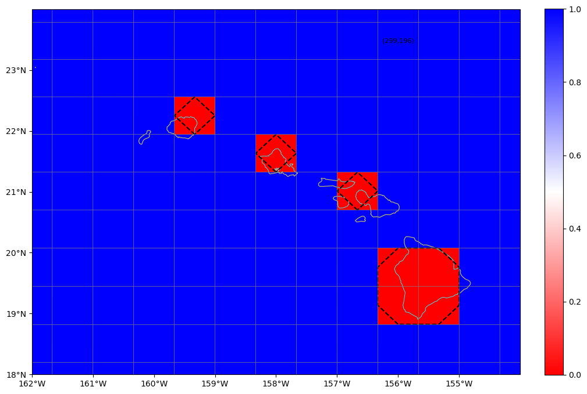
map_mask(df_new,'mask',lonbeg,lonend,latbeg,latend)
/glade/u/apps/opt/conda/envs/npl-2023b/lib/python3.10/site-packages/cartopy/mpl/style.py:76: UserWarning: facecolor will have no effect as it has been defined as "never".
warnings.warn('facecolor will have no effect as it has been '
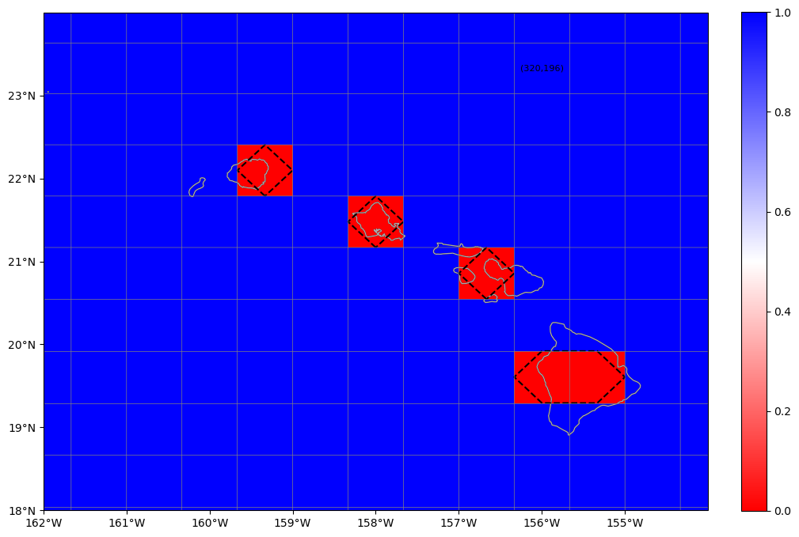
plt.pcolormesh(zdiff)
<matplotlib.collections.QuadMesh at 0x14596a97b2e0>
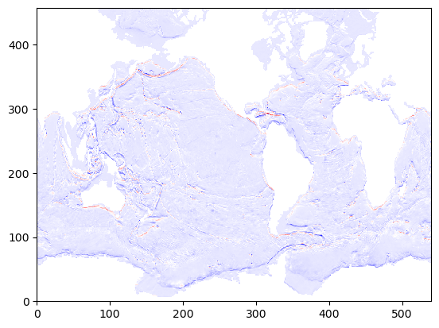
def compare_masks_ij(lonbeg,lonend,latbeg,latend):
fig,ax=plt.subplots(nrows=2,ncols=2,sharex=True,sharey=True,
figsize=(10,7),constrained_layout=True)
ax[0,0].pcolormesh(df_old['wet'].sel(lath=slice(latbeg,latend),
lonh=slice(lonbeg,lonend)),
vmin=0,vmax=1)
ax[0,0].grid(True)
ax[0,0].set_title('tx0.66v1')
ax[0,1].pcolormesh(df_new_sub['mask'].sel(lath=slice(latbeg,latend),
lonh=slice(lonbeg,lonend)),
vmin=0,vmax=1)
ax[0,1].grid(True)
ax[0,1].set_title('tx2_3v2');
diff = df_new_sub['mask'] - df_old['wet']
ax[1,0].pcolormesh(diff.sel(lath=slice(latbeg,latend),lonh=slice(lonbeg,lonend)),
vmin=-1,vmax=1)
ax[1,0].grid(True)
ax[1,0].set_title('tx2_3v2 - tx0.66v1');
def compare_masks_geo(lonbeg,lonend,latbeg,latend):
fig,ax=plt.subplots(nrows=2,ncols=2,sharex=True,sharey=True,
figsize=(10,7),constrained_layout=True)
ax[0,0].pcolormesh(df_old['geolon'].sel(lath=slice(latbeg,latend),lonh=slice(lonbeg,lonend)),
df_old['geolat'].sel(lath=slice(latbeg,latend),lonh=slice(lonbeg,lonend)),
df_old['wet'].sel(lath=slice(latbeg,latend),lonh=slice(lonbeg,lonend)),
vmin=0,vmax=1)
ax[0,0].grid(True)
ax[0,0].set_title('tx0.66v1')
ax[0,1].pcolormesh(df_new_sub['geolon'].sel(lath=slice(latbeg,latend),lonh=slice(lonbeg,lonend)),
df_new_sub['geolat'].sel(lath=slice(latbeg,latend),lonh=slice(lonbeg,lonend)),
df_new_sub['mask'].sel(lath=slice(latbeg,latend),lonh=slice(lonbeg,lonend)),
vmin=0,vmax=1)
ax[0,1].grid(True)
ax[0,1].set_title('tx2_3v1')
diff = df_new_sub['mask'] - df_old['wet']
ax[1,0].pcolormesh(df_old['geolon'].sel(lath=slice(latbeg,latend),lonh=slice(lonbeg,lonend)),
df_old['geolat'].sel(lath=slice(latbeg,latend),lonh=slice(lonbeg,lonend)),
diff.sel(lath=slice(latbeg,latend),lonh=slice(lonbeg,lonend)),
vmin=-1,vmax=1)
ax[1,0].grid(True)
ax[1,0].set_title('tx2_3v2 - tx0.66v1')
lonbeg=df_old['lonh'][0]
lonend=lonbeg+90
latend=90
latbeg=latend-90
compare_masks_ij(lonbeg,lonend,latbeg,latend)
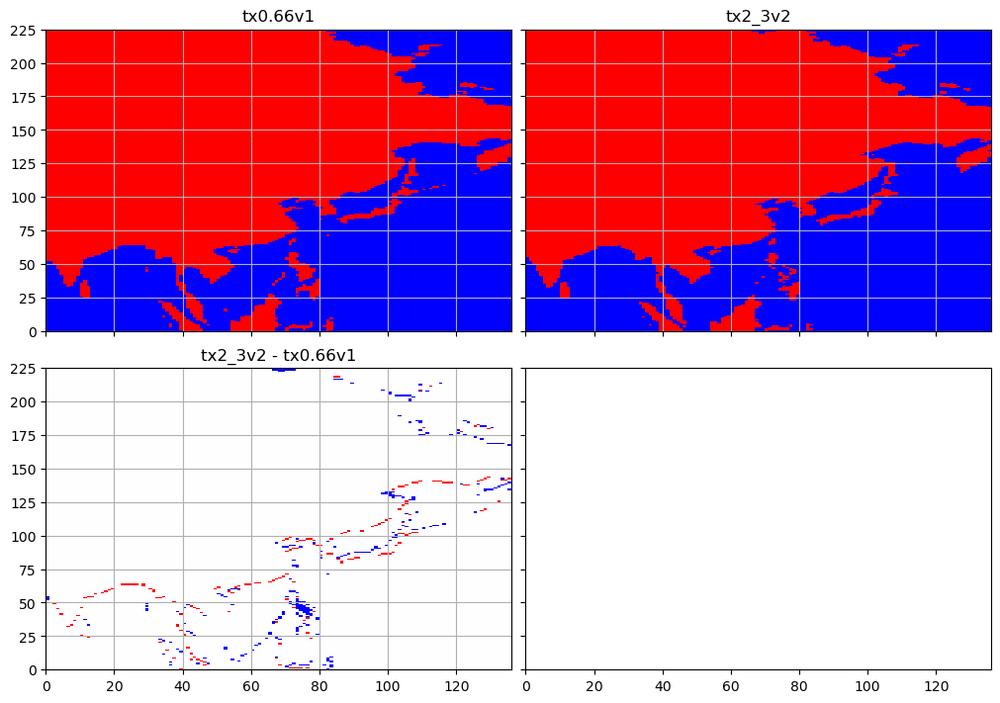
lonbeg=df_old['lonh'][0]+90
lonend=lonbeg+90
latend=90
latbeg=latend-90
compare_masks_ij(lonbeg,lonend,latbeg,latend)
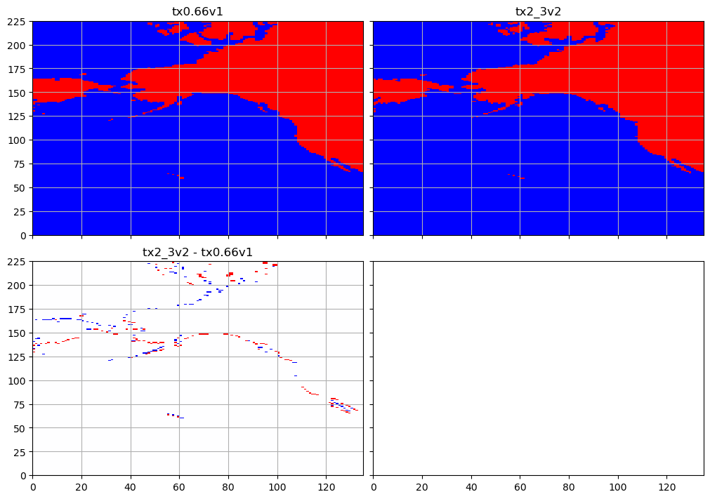
lonbeg=df_old['lonh'][0]+180
lonend=lonbeg+90
latend=90
latbeg=latend-90
compare_masks_ij(lonbeg,lonend,latbeg,latend)
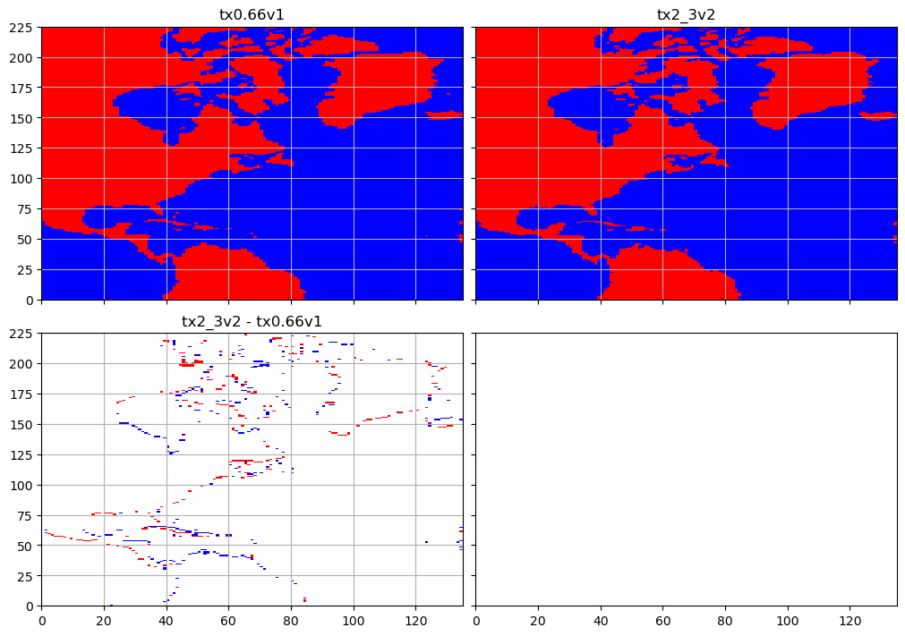
lonbeg=df_old['lonh'][0]+270
lonend=lonbeg+90
latend=90
latbeg=latend-90
compare_masks_ij(lonbeg,lonend,latbeg,latend)
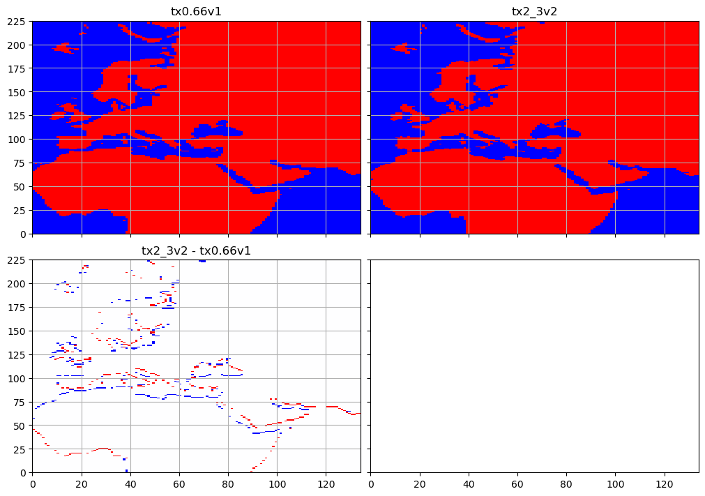
lonbeg=df_old['lonh'][0]
lonend=lonbeg+90
latend=5
latbeg=latend-90
compare_masks_ij(lonbeg,lonend,latbeg,latend)
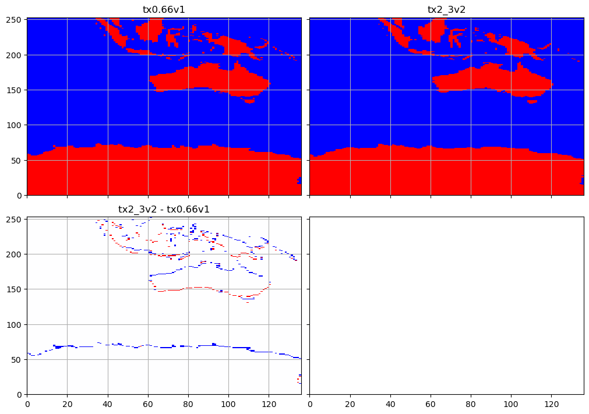
lonbeg=df_old['lonh'][0]+90
lonend=lonbeg+90
latend=5
latbeg=latend-90
compare_masks_ij(lonbeg,lonend,latbeg,latend)
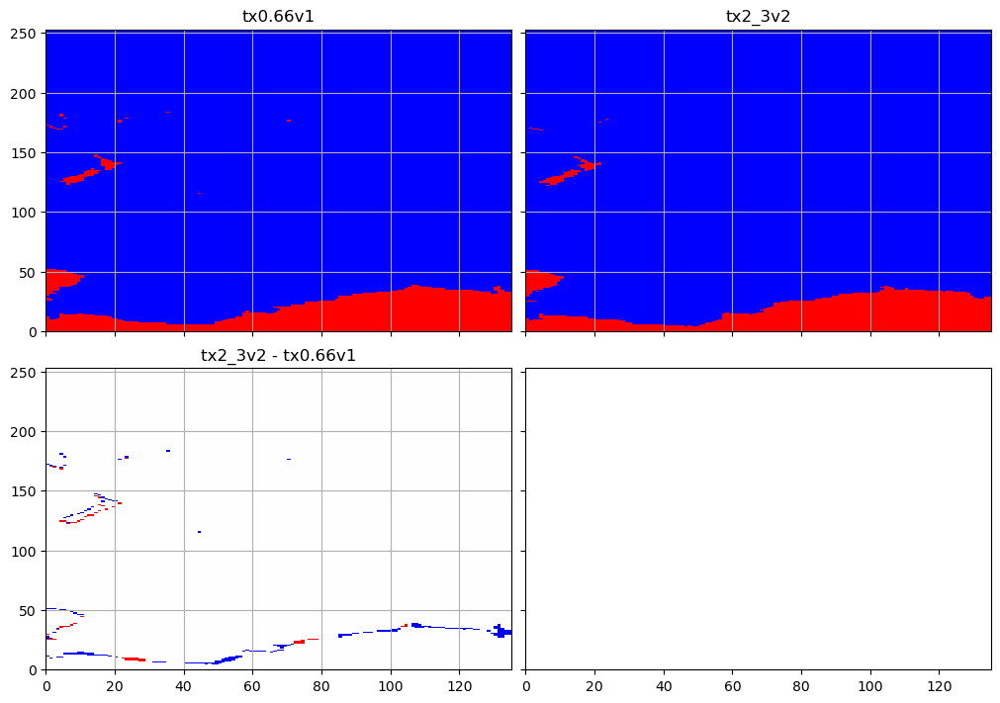
lonbeg=df_old['lonh'][0]+180
lonend=lonbeg+90
latend=5
latbeg=latend-90
compare_masks_ij(lonbeg,lonend,latbeg,latend)
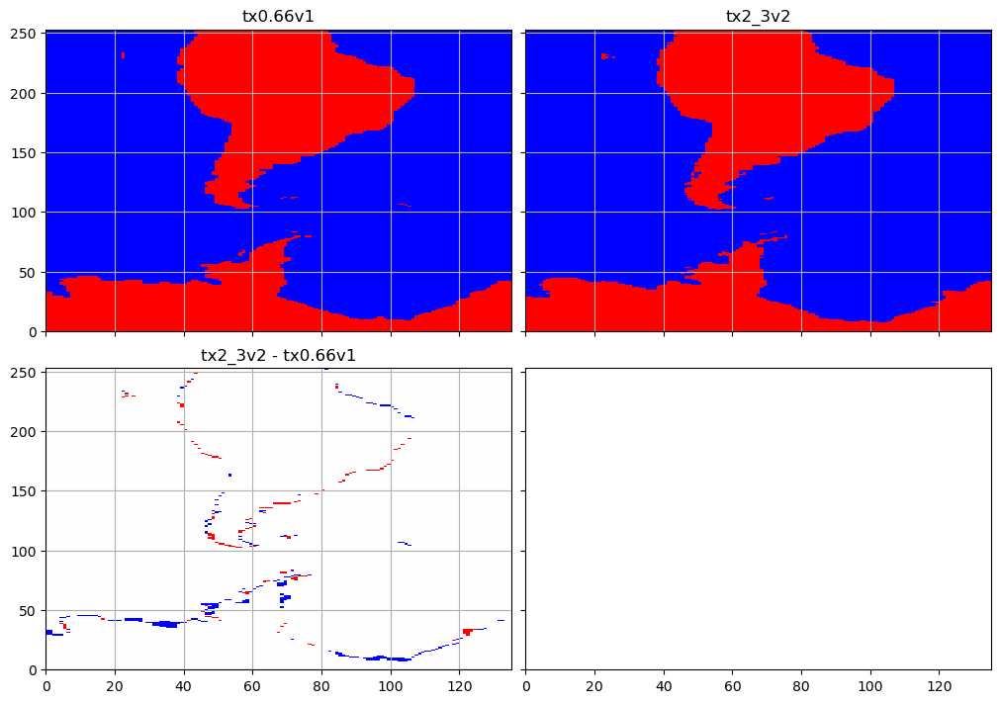
lonbeg=df_old['lonh'][0]+270
lonend=lonbeg+90
latend=5
latbeg=latend-90
compare_masks_ij(lonbeg,lonend,latbeg,latend)
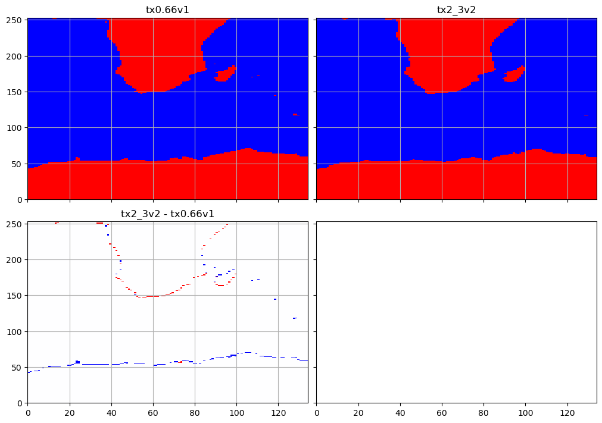
lonbeg=-260
lonend=-235
latend=10
latbeg=-10
compare_masks_geo(lonbeg,lonend,latbeg,latend)
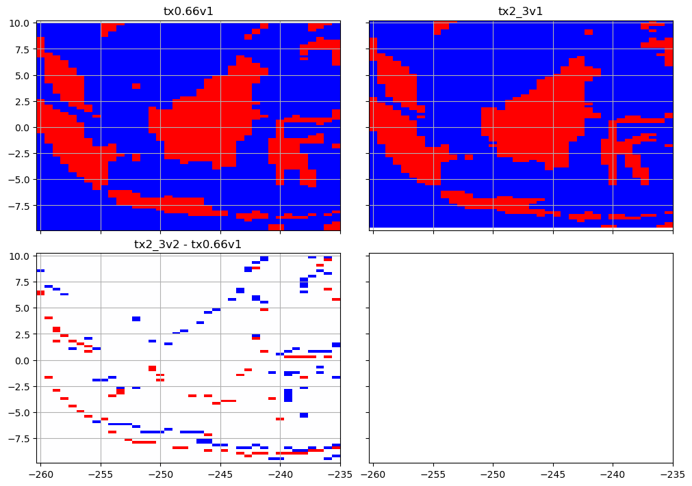
lonbeg=-10
lonend=10
latend=50
latbeg=30
compare_masks_ij(lonbeg,lonend,latbeg,latend)
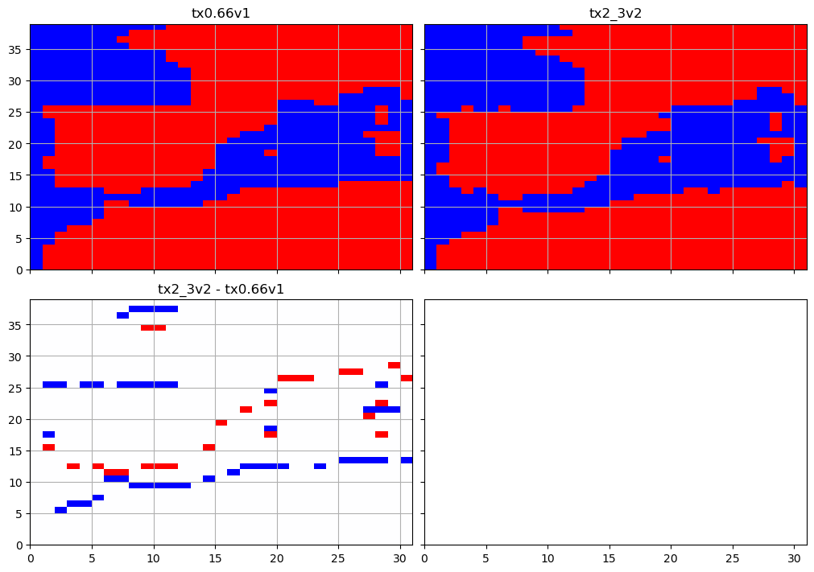